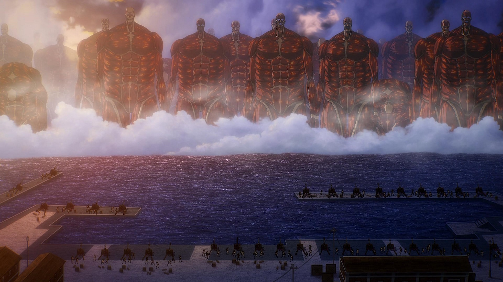
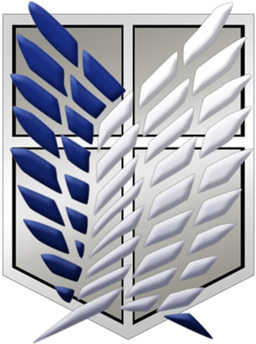

Shingeki no Kyojin (L’Attaque des Titans) est un manga créé par Hajime Isayama, publié entre 2009 et 2021. L’histoire se déroule dans un monde où l’humanité, presque anéantie, survit à l’abri de trois immenses murs pour se protéger des Titans, d’énormes créatures humanoïdes qui dévorent les hommes sans raison apparente. Pendant plus d’un siècle, cette coexistence fragile semble tenir… jusqu’au jour où un Titan colossal apparaît et brise le mur extérieur, plongeant la ville de Shiganshina dans le chaos.Parmi les survivants se trouvent Eren Jäger, sa sœur adoptive Mikasa Ackerman et leur ami Armin Arlert. Marqué par la mort de sa mère sous ses yeux, Eren jure d’éliminer tous les Titans et s’engage avec ses amis dans l’armée. Après un entraînement intense au sein du 104e bataillon, ils rejoignent le Bataillon d’exploration, l’unité chargée de combattre les Titans au-delà des murs.Le récit mêle action brutale, tension permanente et mystères grandissants : d’où viennent les Titans ? Pourquoi l’humanité est-elle enfermée ? Que cachent vraiment les murs ? Au fil des arcs, Shingeki no Kyojin explore la liberté, le sacrifice, la manipulation et la nature profonde de l’humanité, s’imposant comme l’une des œuvres les plus marquantes et influentes du manga contemporain
